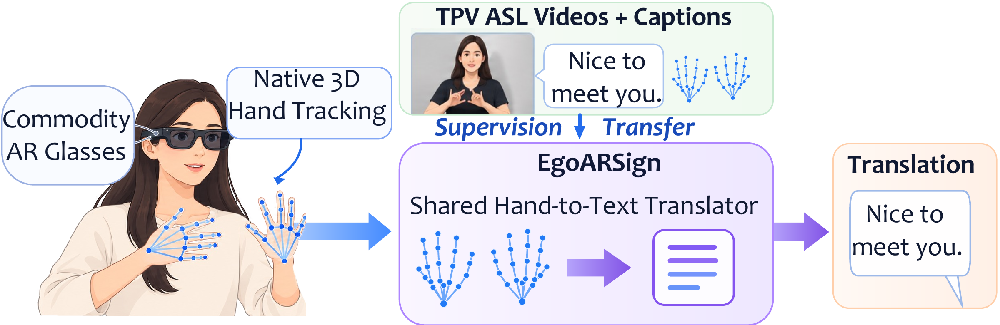
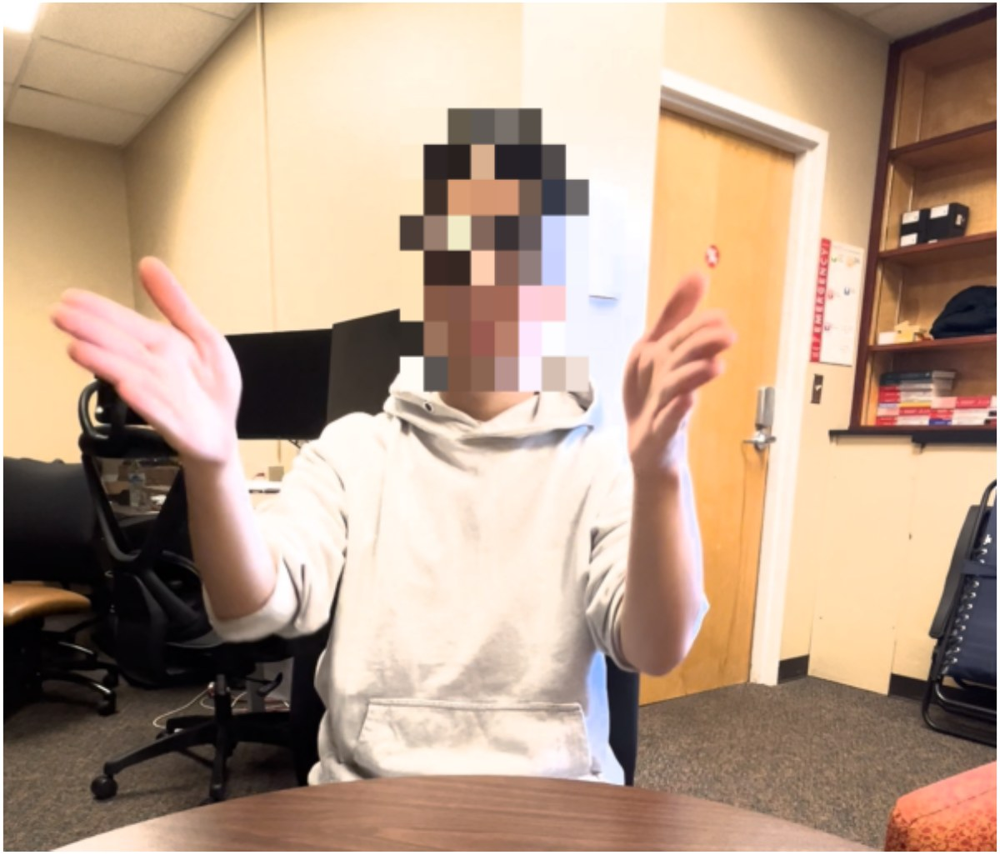
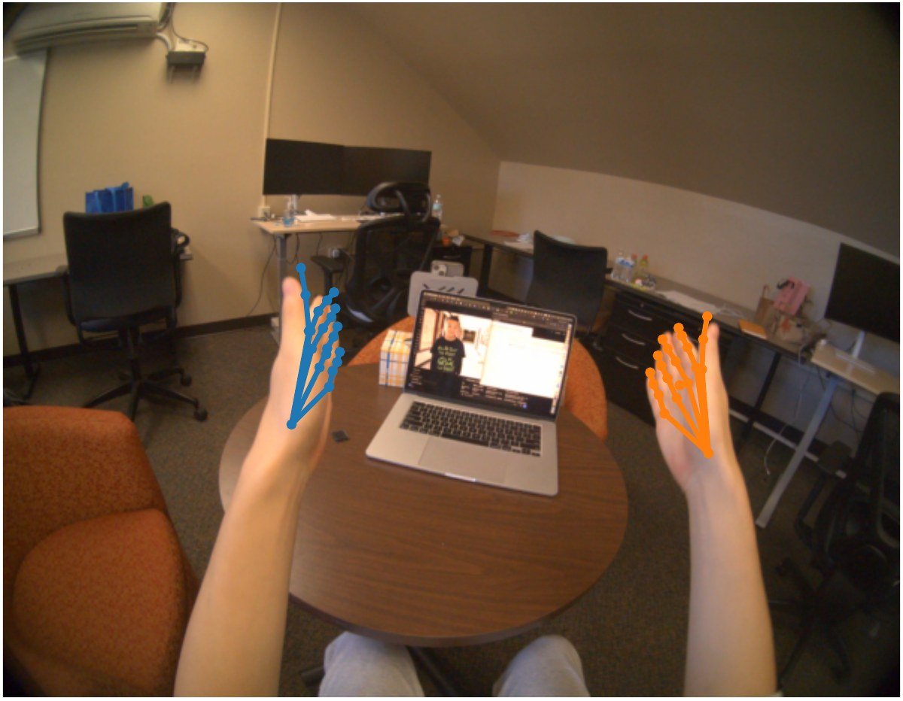
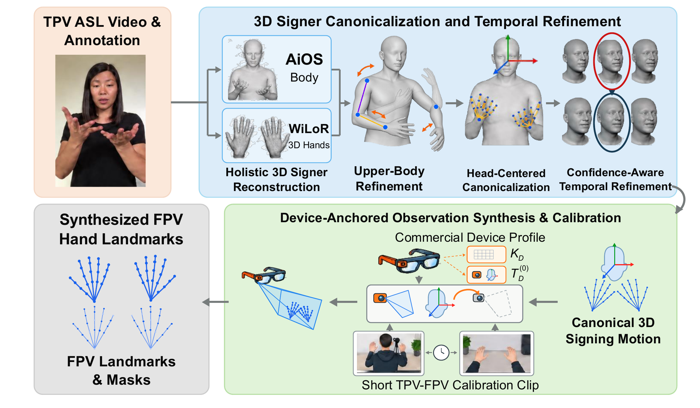
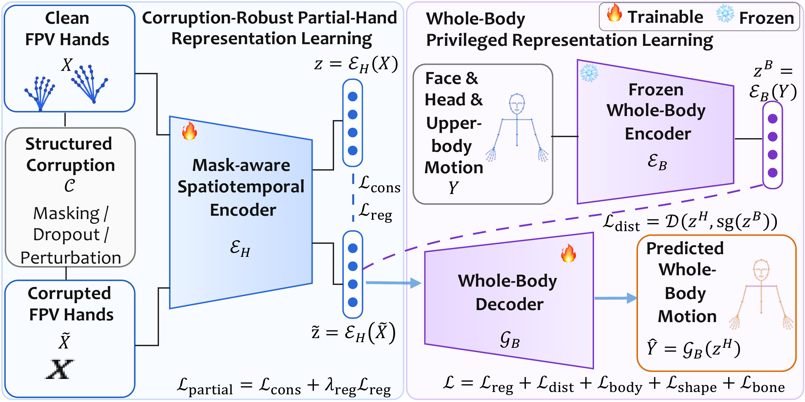
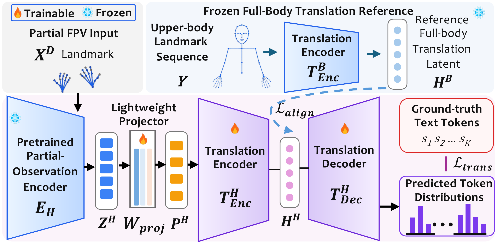
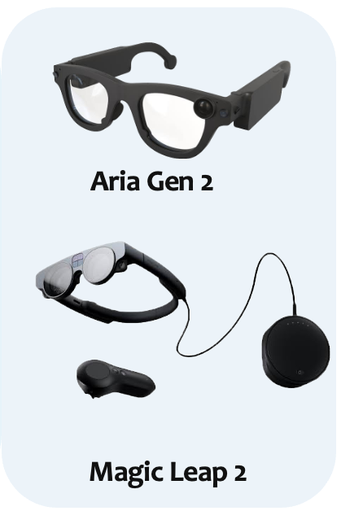

AR glasses offer a promising platform for portable American Sign Language (ASL) translation. However, existing wearable systems often rely on customized sensing hardware and purpose-collected datasets, limiting reproducibility and broader adoption. While commodity AR glasses provide native hand tracking without additional sensing hardware, they capture only partial, head-relative hand observations, missing the facial expressions and head and upper-body movements that convey important linguistic information. Meanwhile, most existing ASL translation systems and datasets rely on third-person-view (TPV) videos with richer visual information, whereas labeled first-person-view (FPV) hand-tracking data remain scarce.
We present EgoARSign, a framework that enables ASL translation from native AR hand tracking by leveraging existing captioned TPV videos. EgoARSign reconstructs 3D signing motion and synthesizes FPV hand-tracking sequences while simulating head movement and tracking loss. To mitigate the loss of linguistic information beyond hand movements, we train a hand encoder with whole-body motion supervision and use its features and paired captions to train an FPV translator.
On synthetic FPV test sets derived from OpenASL and How2Sign, EgoARSign achieves BLEU-4 scores of 19.37 and 10.19, respectively, only 16.0% and 30.4% lower than a state-of-the-art TPV-based translator. We further deploy EgoARSign on Aria Gen 2 and Magic Leap 2 and evaluate it with 10 participants, each signing about 15 sentences selected from a 61-sentence inventory. On native Aria Gen 2 hand tracking, limited labeled adaptation improves cross-signer BLEU-4 from 10.0 to 40.7. We also build a live sign-to-speech prototype that streams hand tracking from Aria Gen 2 to a nearby laptop and speaks the translation in English. By bridging existing TPV datasets and native AR sensing, EgoARSign reduces reliance on specialized hardware and large labeled FPV datasets, advancing practical ASL translation on AR glasses.

Key insight. Existing TPV videos contain both the hand movements needed to synthesize FPV hand-tracking observations and the richer facial and body information that can supervise a hand-only translator. EgoARSign uses these two forms of information to train an FPV translator from existing captioned TPV corpora, without large-scale labeled FPV data or specialized sensing hardware.

(a) TPV camera: hands, face, and upper body are visible.

(b) FPV on AR glasses: only partial, head-relative hand landmarks.
ASL conveys meaning through hand movements, facial expressions, head movements, and upper-body posture. Native AR hand tracking observes only the hands, relative to the moving head, and tracking can degrade when hands overlap, move quickly, or leave the sensing field. Large captioned ASL corpora exist only as TPV video, and AR devices differ in their joint definitions, coordinate frames, and validity signals.
We reconstruct 3D signing motion from captioned TPV videos by fusing AiOS (whole body), WiLoR (3D hands), and RTMPose (2D arm keypoints) into SMPL-X, then refine the upper body so the hands connect to the arms. The recovered hands are transformed into a head-centered frame, producing caption-aligned FPV hand-landmark sequences. The result is a scalable source of hand-only training data and a controlled synthetic FPV testbed.

A hand-only student encoder reads head-centered 3D hand landmarks under structured corruption (finger masking, whole-hand dropout, temporal gaps, and coordinate noise). During training, a frozen whole-body teacher trained on TPV keypoints supplies latent distillation targets, and an auxiliary decoder predicts face, head, and upper-body motion. Only the hand encoder is kept for translation.

A lightweight projector maps hand features into a Uni-Sign-initialized mT5 translator. A frozen TPV translation pathway aligns the encoder states during training and is removed at inference. At test time, the model maps native hand tracking straight to English, with no full-body pose reconstruction and no TPV video.


A shared device-profile interface converts each device's native joints, coordinate frames, and tracking validity signals into one model-facing representation. The same translator therefore serves both Project Aria Gen 2 and Magic Leap 2, keeping device geometry separate from linguistic modeling.
We collected native hand tracking from 10 participants. Each participant signed about 15 sentences selected from a 61-sentence inventory (54 from OpenASL, 7 from How2Sign), repeating each sentence three times. All participants were recorded on Aria Gen 2, and two were also recorded on Magic Leap 2, for 484 recordings in total.
19.37
BLEU-4 on synthetic FPV OpenASL
TPV-pose reference: 23.07
10.19
BLEU-4 on synthetic FPV How2Sign
TPV-pose reference: 14.65
10.0 → 40.7
BLEU-4 on held-out Aria signers
zero-label → limited adaptation
| Dataset | TPV pose | Hand-only (ours) | Device-oriented |
|---|---|---|---|
| OpenASL (903 clips) | 23.07 | 19.37 | 17.58 |
| How2Sign (2,203 clips) | 14.65 | 10.19 | – |
| Native input | Zero-label | mT5 frozen | mT5 adapted |
|---|---|---|---|
| Aria Gen 2, 10 signers | 10.0 | 21.8 | 40.7 |
| Magic Leap 2, 2 signers | 13.3 | 22.9 | 58.6 |
| Budget | 0% | 5% | 10% | 20% | 50% | 100% |
|---|---|---|---|---|---|---|
| mT5 frozen | 10.0 | 15.6 | 17.2 | 20.3 | 21.2 | 21.8 |
| Full adaptation | 10.0 | 18.2 | 22.5 | 30.4 | 37.8 | 40.7 |
Even 20% of the other signers' labeled recordings triples zero-label performance. Held-out-phrase experiments show that gains on previously observed sentences do not necessarily carry over to new sentences; see the paper for the full protocols. Numbers reflect the current version of the paper and may be updated.